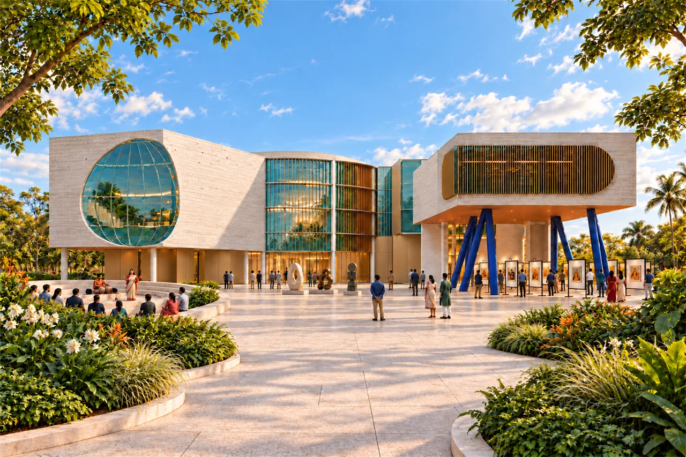

Arif Raihan
Architecture & interiors
Design development / Coordination
Dublin, Ireland

Sylhet Divisional MuseumCourtyard & public life / Academic designSelected professional & academic workExplore the projects ↓
Selected work (09)
9 selected projects shown


About / Arif RaihanFrom shared ground
Download selected work
From shared ground
to the smallest detail.
I work across architectural design development, interiors and technical coordination. My experience connects drawing and visualization with consultant coordination, site inspections and the review of completed work.
Experience
Suvastu / 2022–2025
Domus Architects / 2022
Based in Dublin, Ireland
Education
B.Arch / BRAC University / 2021
MBA, Project Management
Dublin Business School / 2026